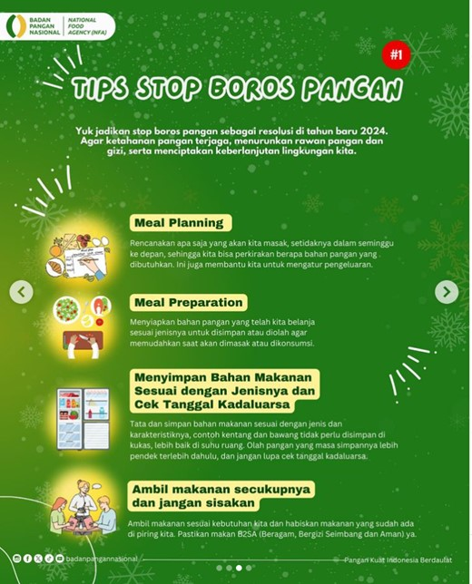

STOP BOROS PANGAN
Kajian pakar pangan ± 30% makanan kita terbuang
Salah satu strategi alternatif untuk menekan kebutuhan pangan melalui penurunan pemborosan pangan.
Penyebab pemborosan pangan adalah perilaku konsumsi masyarakat yang tidak menghargai pangan:
1. Makan tidak habis
2. Masak yang tidak bijak
3. Belanja berlebihan
4. Gengsi menghabiskan makanan
5. Hasil pertanian yang dibiarkan busuk karena harga jatuh
Setiap tahun 23-48 Juta ton makanan terbuang menjadi sampah
Kerugian ekonomi mencapai 213 – 551 Triliun (4-5% PDB)
Dapat memberi makan 61 - 125 Juta orang Indonesia
2. Kelompok Pangan dalam Pola Makan Sehat
Untuk memenuhi kebutuhan gizi, penting untuk mengonsumsi makanan dari berbagai kelompok pangan berikut:
- Karbohidrat: Sumber energi utama. Pilih karbohidrat kompleks seperti beras merah, gandum utuh, dan kentang.
- Protein: Penting untuk pertumbuhan dan perbaikan jaringan. Sumber protein bisa berasal dari hewani (daging, ikan, telur) dan nabati (kacang-kacangan, tahu, tempe).
- Lemak: Dibutuhkan dalam jumlah sedikit, terutama lemak sehat seperti yang ditemukan dalam alpukat, kacang-kacangan, dan ikan.
- Vitamin dan Mineral: Terkandung dalam buah-buahan dan sayuran, penting untuk fungsi tubuh yang optimal.
- Serat: Penting untuk pencernaan, bisa didapat dari sayuran, buah-buahan, dan biji-bijian.

3. Rekomendasi Makanan Sehari-hari
Untuk menerapkan pola makan sehat, berikut adalah rekomendasi konsumsi harian berdasarkan panduan gizi:
- Sayuran dan Buah-buahan: Setengah dari piring makan Anda sebaiknya berisi sayuran dan buah-buahan.
- Protein: Seperempat dari piring makan bisa diisi dengan sumber protein seperti daging, ikan, telur, atau kacang-kacangan.
- Karbohidrat Kompleks: Seperempat lainnya bisa diisi dengan sumber karbohidrat seperti beras merah atau roti gandum utuh.
- Produk Susu : Sertakan produk susu rendah lemak atau alternatif seperti susu kedelai yang diperkaya kalsium.
- Cairan : Minum cukup air, hindari minuman manis dan alkohol.
4. Tips Mengadopsi Pola Makan Sehat
Berikut adalah beberapa tips praktis untuk membantu mengadopsi pola makan sehat:
- Perencanaan Makanan: Rencanakan menu harian atau mingguan untuk memastikan variasi dan keseimbangan.
- Baca Label Makanan: Perhatikan informasi nutrisi pada kemasan makanan untuk membuat pilihan yang lebih sehat.
- Masak Sendiri: Memasak makanan sendiri memberi Anda kontrol penuh atas bahan dan cara memasaknya.
- Porsi yang Tepat: Perhatikan ukuran porsi untuk menghindari makan berlebihan.
- Konsumsi Makanan Segar: Pilih makanan segar dibanding makanan olahan untuk mendapatkan nutrisi yang lebih baik.
5. Pola Makan untuk Kondisi Khusus
Beberapa kondisi kesehatan memerlukan penyesuaian pola makan:
- Diabetes: Memperhatikan asupan gula dan karbohidrat, serta mengonsumsi makanan dengan indeks glikemik rendah.
- Hipertensi: Mengurangi asupan garam dan mengonsumsi lebih banyak buah dan sayuran.
- Kegemukan/Obesitas: Mengontrol asupan kalori dan meningkatkan aktivitas fisik.
- Penyakit Jantung: Mengurangi asupan lemak jenuh dan trans, serta memperbanyak konsumsi lemak sehat dan serat.
6. Contoh Menu Pola Makan Sehat
Berikut adalah contoh menu sehari yang seimbang dan sehat:
- Sarapan: Oatmeal dengan buah segar dan kacang-kacangan.
- Snack Pagi: Yogurt rendah lemak dengan potongan buah.
- Makan Siang: Nasi merah dengan ayam panggang, sayuran kukus, dan salad.
- Snack Sore : Buah-buahan segar atau smoothie.
- Makan Malam: Ikan bakar dengan kentang panggang dan sayuran hijau.
- Snack Malam: Segenggam kacang almond atau wortel potong.